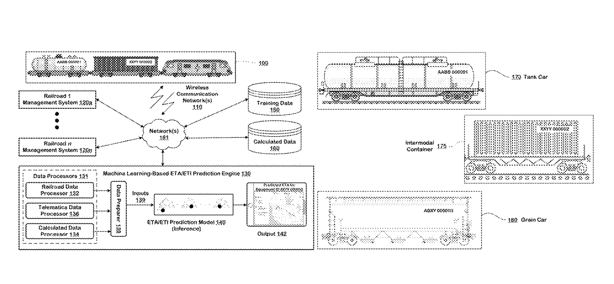
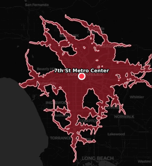
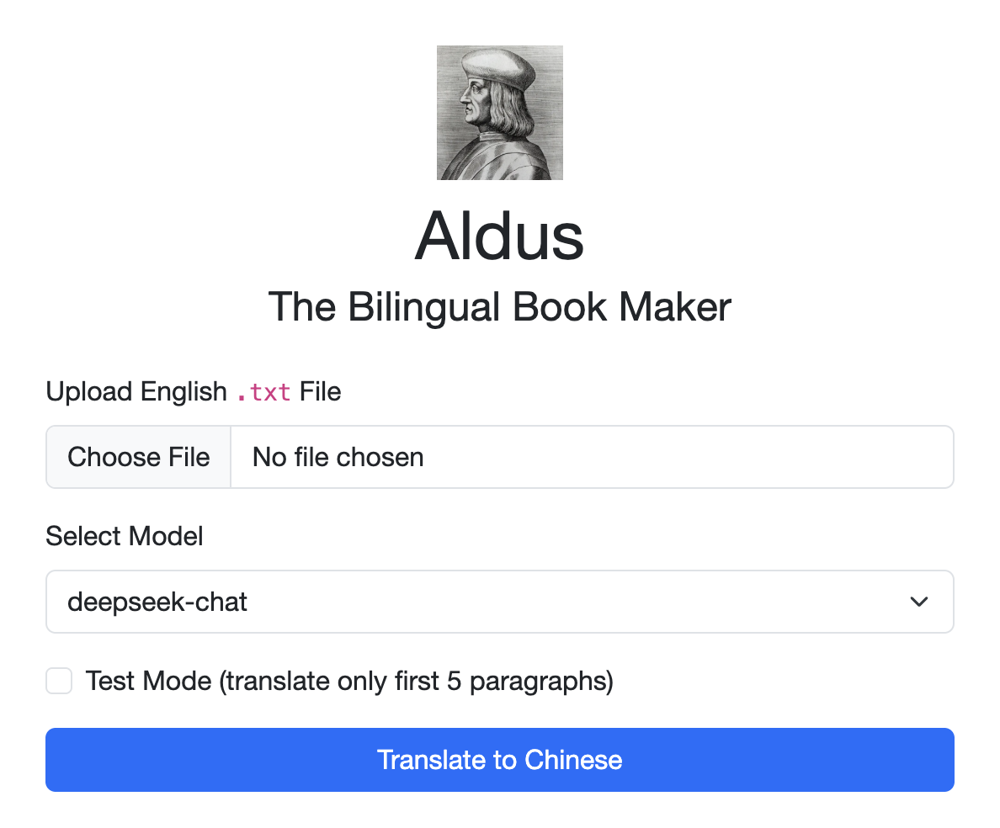
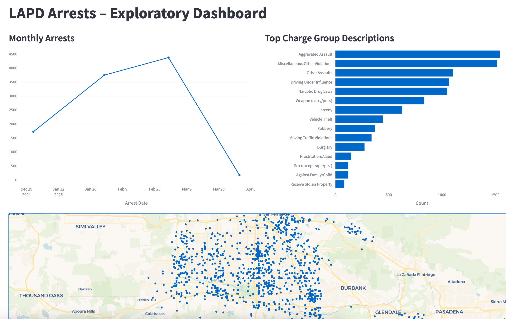
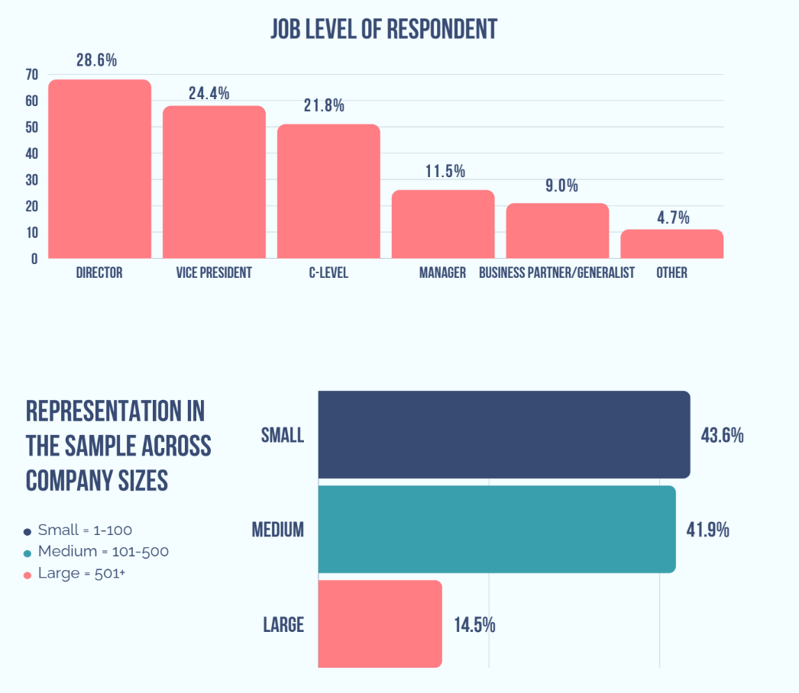

ETA Prediction Engine US Patent 12,373,769 B1
Lead inventor of deep learning and geospatial routing methodology achieving industry-leading ETA accuracy for freight and logistics at Telegraph. Read full patent (PDF) →
Data science & analytics leader specializing in analytics engineering, LLMs, and predictive modeling. Outside of work, I'm usually interested in trains, urban planning, film & literature, language, economics, and hiking.

Lead inventor of deep learning and geospatial routing methodology achieving industry-leading ETA accuracy for freight and logistics at Telegraph. Read full patent (PDF) →

Interactive travel-time reachability map using open geospatial routing data and custom contours.

Open-source utility for building elegant dual-language parallel text PDFs from raw texts.

Interactive dashboard analyzing Los Angeles crime data and arrest trends across police divisions.

Whitepaper summarizing findings from a nationwide employer survey on remote and hybrid workforce dynamics.
Feel free to reach out via email or connect on social platforms: